Abyss
Abyss es un mapa de tamaño medio con un diseño abierto y verticalidad, lo que permite a los jugadores moverse por el mapa de diferentes maneras y crear oportunidades para emboscadas y enfrentamientos estratégicos.
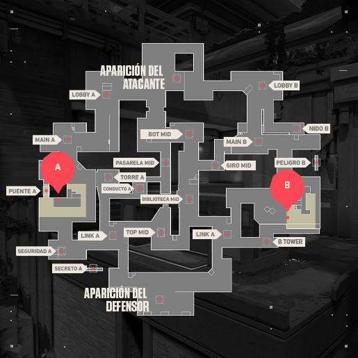
Abyss es un mapa de tamaño medio con un diseño abierto y verticalidad, lo que permite a los jugadores moverse por el mapa de diferentes maneras y crear oportunidades para emboscadas y enfrentamientos estratégicos.

Ascent es un mapa de tamaño medio con un diseño abierto y verticalidad, lo que permite a los jugadores moverse por el mapa de diferentes maneras y crear oportunidades para emboscadas y enfrentamientos estratégicos.
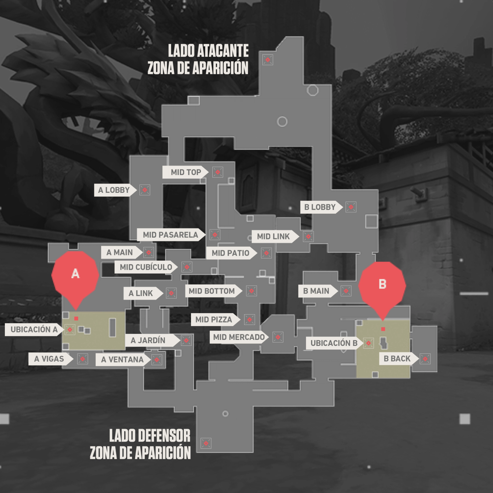
Bind es un mapa de tamaño medio con dos sitios de bombardeo y un diseño asimétrico, lo que permite a los jugadores moverse por el mapa de diferentes maneras y crear oportunidades para emboscadas y enfrentamientos estratégicos.
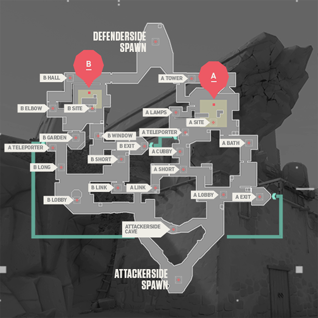
Breeze es un mapa de tamaño grande con un diseño abierto y verticalidad, lo que permite a los jugadores moverse por el mapa de diferentes maneras y crear oportunidades para emboscadas y enfrentamientos estratégicos.
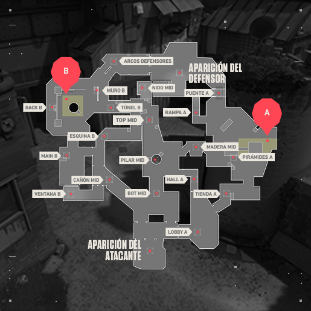
Corrode es un mapa de tamaño medio con un diseño abierto y verticalidad, lo que permite a los jugadores moverse por el mapa de diferentes maneras y crear oportunidades para emboscadas y enfrentamientos estratégicos.
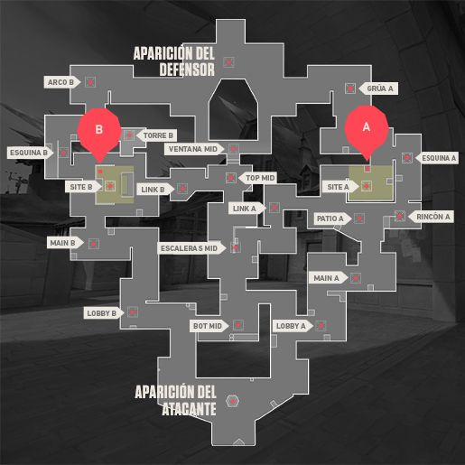
Fracture es un mapa de tamaño medio con un diseño abierto y verticalidad, lo que permite a los jugadores moverse por el mapa de diferentes maneras y crear oportunidades para emboscadas y enfrentamientos estratégicos.
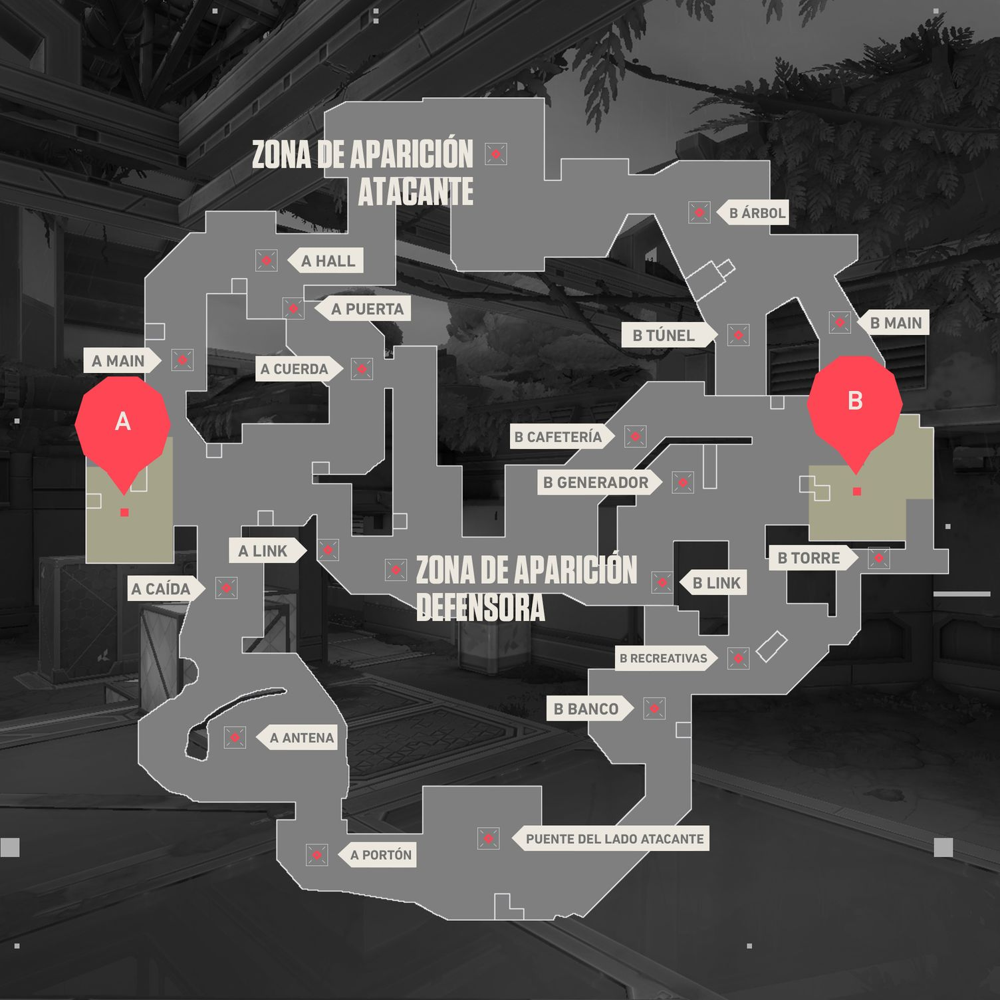
Haven es un mapa de tamaño medio con tres sitios de bombardeo y un diseño asimétrico, lo que permite a los jugadores moverse por el mapa de diferentes maneras y crear oportunidades para emboscadas y enfrentamientos estratégicos.
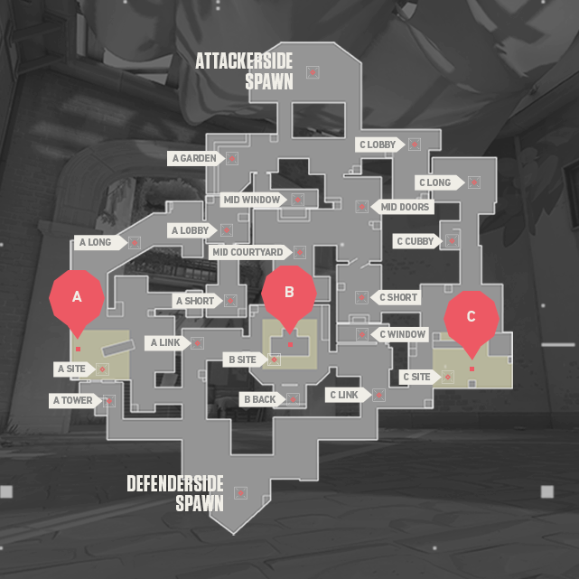
Icebox es un mapa de tamaño medio con un diseño abierto y verticalidad, lo que permite a los jugadores moverse por el mapa de diferentes maneras y crear oportunidades para emboscadas y enfrentamientos estratégicos.
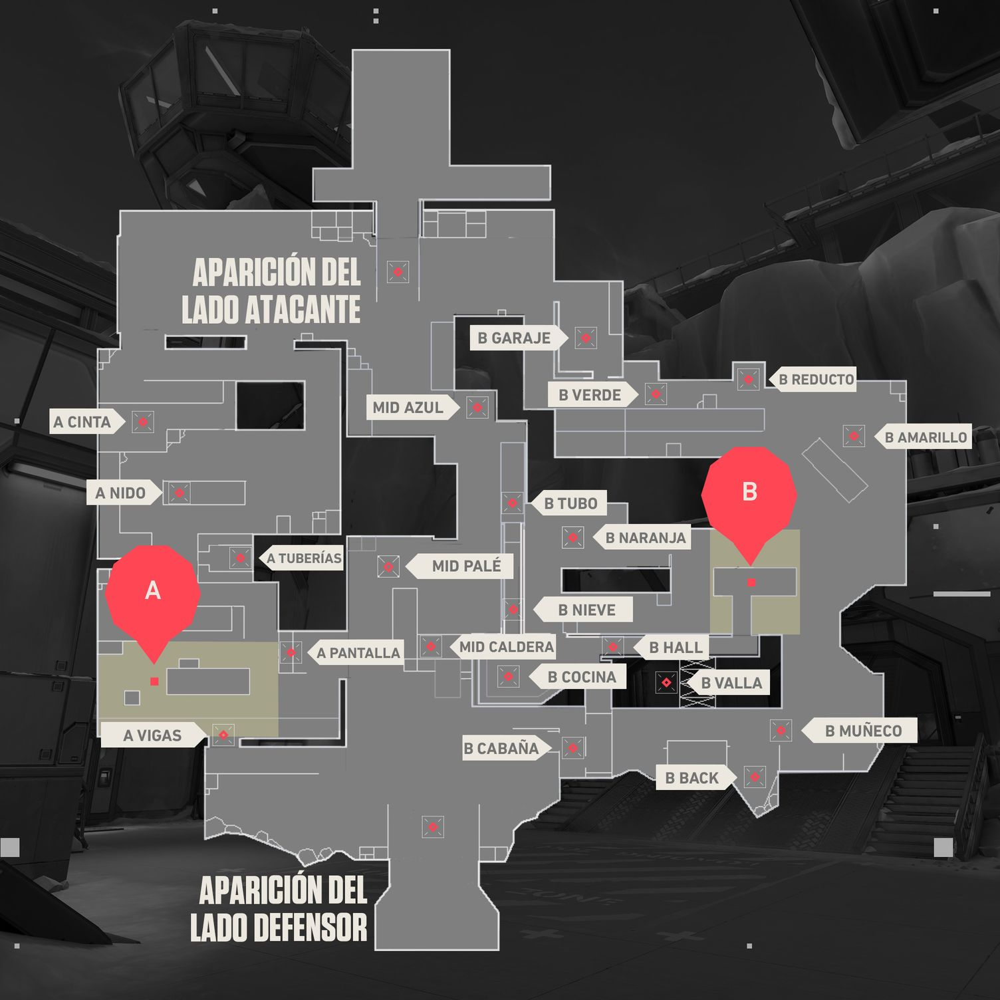
Lotus es un mapa de tamaño medio con un diseño abierto y verticalidad, lo que permite a los jugadores moverse por el mapa de diferentes maneras y crear oportunidades para emboscadas y enfrentamientos estratégicos.
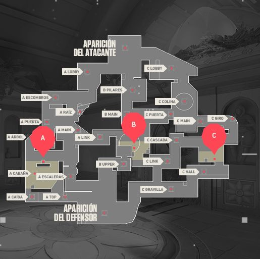
Pearl es un mapa de tamaño medio con un diseño abierto y verticalidad, lo que permite a los jugadores moverse por el mapa de diferentes maneras y crear oportunidades para emboscadas y enfrentamientos estratégicos.
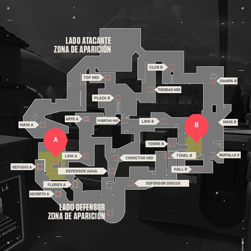
Split es un mapa de tamaño medio con un diseño abierto y verticalidad, lo que permite a los jugadores moverse por el mapa de diferentes maneras y crear oportunidades para emboscadas y enfrentamientos estratégicos.
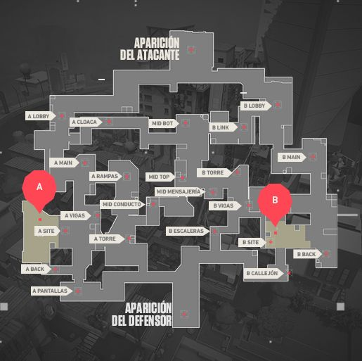
Llegad hasta la cima de Summit: hogar de la academia de entrenamiento de radiantes más avanzada de China. Maximizad vuestro potencial estratégico en un mapa con imponentes muros que caen para cambiar la disposición del campo de batalla durante una ronda entera
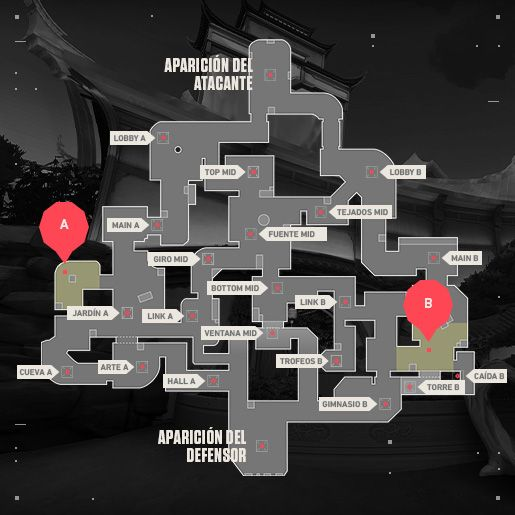
Sunset es un mapa de tamaño medio con un diseño abierto y verticalidad, lo que permite a los jugadores moverse por el mapa de diferentes maneras y crear oportunidades para emboscadas y enfrentamientos estratégicos.
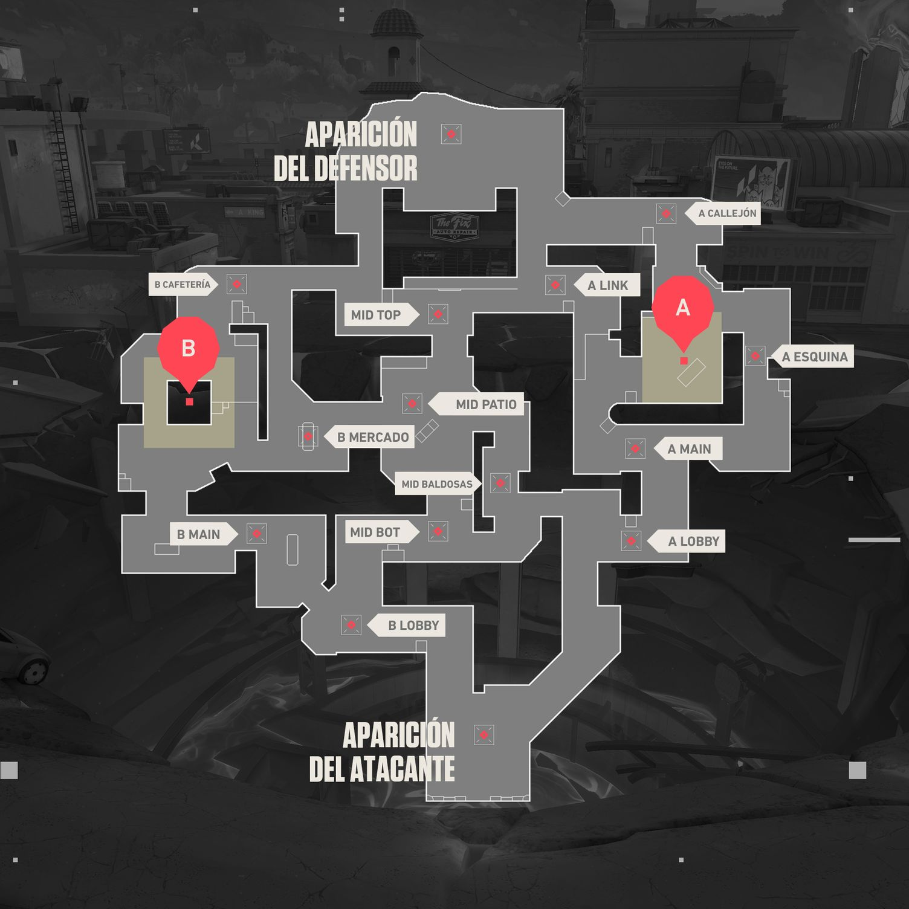